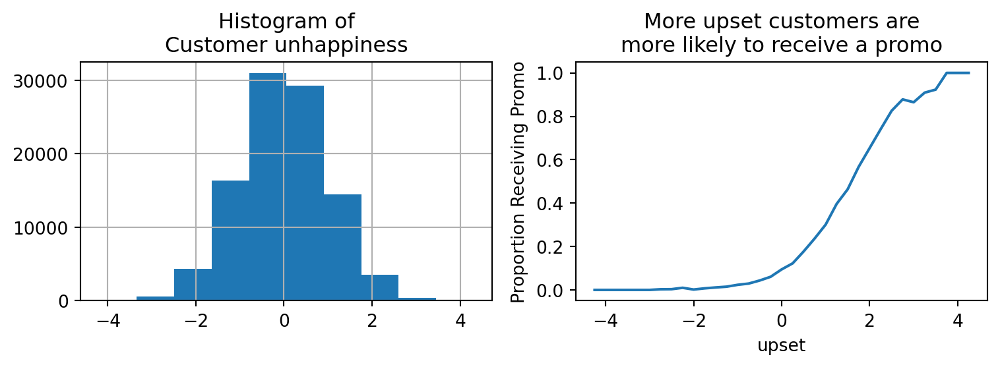

Why do we need A/B tests? The Potential Outcomes Model
experimentation
Published
September 17, 2022
Overview
This blog post introduces the Potential Outcomes Model and introduces why experiments are often necessary to measure what we want. This topic is already covered extensively in other more rigorous resources. This post provides just another example.
The Potential Outcomes Model
Let’s say we want to know the effect of of a customer support product on a customer outcome such as customer lifetime value LTV. Customers who might seem particularly upset when on the phone with customer support will be more likely to receive a promo code from the customer support staff, which we label as \(T=1\) (or treatment = True). We represent the outcome, their customer lifetime value (assuming we can observe their full LTV), as \(Y(1)\), which really just means “what is the outcome Y for customers who had the treatment”.
A Hypothetical world
What if we envision some hypothetical world we can observe the outcome for each customer who reached out to customer support, with and without having the treatment of receiving a promo?
As shown above, in this hypothetical world we can see the exact individual treatment effect (ITE) for every customer.
- Person 0 would have spent $475.25 more over their lifetime if they received the promo
- Person 2 would have spend $203.02 more over their lifetime if they received the promo
If we want to know the Average Treatment Effect (ATE, often denoted \(\tau\)), all we have to do is take the mean of all of the individual treatment effects. As we can see, the ATE is about $500
We can also represent this in hypothetical terms that will be useful later - the average treatment effect of the treated (ATT), and the average treatment effect of the untreated (ATU). The true ATE ends up being the weighted average of these terms, weighted by the proportion of individuals seeing the treatment, \(\pi\)
We can confirm that this is equivalent to the ATE from above with code
pi = data["T"].value_counts(normalize=True)(pi * data.groupby("T").mean()["ITE"]).sum()
500.0994953
Getting hit with the real world
So how can we create a scenario where we can observe each person with and without having received the promo? Sadly, we can’t. But is there a way to make use of data we already have? Here’s the actual data we might have access to. Notice that now the hypothetical potential outcomes are no longer visible (just like in the real world).
One (unfortunately incorrect) idea might be take the average of Y(1) and subtract the average of Y(0), also known as the simple difference in outcomes (SDO).
\[
\text{SDO} = E[ Y(1) | T = 1 ] - E[ Y(0) | T = 0 ]
\]
Notice that I use the terms \(E[ Y(0) | T = 0 ]\) and \(E[ Y(1) | T = 1 ]\). Reading these as plain english “the expected value (aka mean) of Y(0) given no treatment” and “the expected value (aka mean) of Y(1) given a treatment”
Under the SDO it looks like the treatment has a negative effect - this is saying that giving customers a promo makes their LTV $88 worse? That seems seriously wrong, and is a huge problem. It should be $500 like we saw in our hypothetical world. So what went wrong?
Selection Bias
We can illustrate the problem by bringing another variable into the mix - customer unhappiness (we’re pretending we can measure it directly for examples sake).
fig, ax = plt.subplots(1,2, figsize=(8,3))ax[0].set_title("Histogram of\nCustomer unhappiness")df.upset.hist(ax=ax[0])ax[1].set_title("More upset customers are\nmore likely to receive a promo")ax[1].set_ylabel("Proportion Receiving Promo")df.groupby(df.upset//0.25*0.25).mean()["T"].plot(ax=ax[1])plt.tight_layout()df.head()
upset
T
Y(0)
Y(1)
ITE
Y
Person
0
-1.157550
0
3108.62
NaN
NaN
3108.62
1
0.289756
0
2347.01
NaN
NaN
2347.01
2
0.780854
1
NaN
2379.3
NaN
2379.30
3
0.543974
0
2146.09
NaN
NaN
2146.09
4
-0.961383
0
2806.50
NaN
NaN
2806.50

It looks like the most unhappy customers are the most likely to receive a treatment as shown in the DAG below.
This is an example of selection bias (more specifically, its collider bias, a common confound). When comparing customers who had the treatment vs. didnt have the treatment, we accidentally also end up comparing unhappy customers vs. happier customers, and obviously unhappier customers tend to have worse lifetime value. We need to find a way to compare the impact of the treatment while controlling for the happiness of customers so that we are making a more fair comparison. For example, if we had 2 equally unhappy customers and 1 received the treatment while the other didnt, we’d get a more reasonable comparison for evaluating the treatment effect.
Identification Under Selection bias
How can we represent the scenario above with math? This is where the Potential Outcomes model starts coming into play. Note I’m borrowing this directly from Scott Cunningham. For the full proof, see his book, Causal Inference the Mixtape.
This equation for the Potential Outcomes model basically says that anytime you make a comparison on observational data, it ends up being the sum of the true average treatment effect, selection bias, and Heterogeneous Treatment effect (HTE) bias. HTEs are just a fancy way of saying the personalized effect, aka promos might be more impactful for some users than others.
So how does this relate to what we did before? Well when we tried to compare users who saw the treatment vs. those that didnt
\[
\text{SDO} = E[ Y(1) | T = 1 ] - E[ Y(0) | T = 0 ]
\]
we didnt take into account the fact that users who saw the treatment tend to be different than those who didn’t. Users who saw the treatment tend to be more unhappy by design.
So if we subtract out the selection bias from the SDO (I got this via simple algebra), aka we control for the unhappiness between customers, we can get closer to identifying the true ATE.
Note that selection bias was \[
E\big[Y(0)\mid T=1\big] - E\big[Y(0)\mid T=0\big]
\]
This is just saying selection bias is the fundamental difference between users who get picked for treatment vs. those who dont.
In our case, the fundamental difference between whether users are selected for treatment is based upon their unhappiness. So if we can subtract out the effect of unhappiness, we can subtract out the selection bias
df.groupby("T").mean()[["upset"]].T
T
0
1
upset
-0.159046
1.018004
We can do this with OLS. The most obvious way is to fit a model relating unhappiness to LTV, and then subtract out that effect.
There’s actually an even more simple way to control for selection bias - it can just be included as a term in an OLS regression model.
def statsmodels_to_df(model): table = np.array(model.summary().tables[1].data)return pd.DataFrame(table[1:, 1:], columns=table[0,1:], index=table[1:,0])model2 = sm.OLS.from_formula(" Y ~ T + upset", data=df).fit()statsmodels_to_df(model2)
coef
std err
t
P>|t|
[0.025
0.975]
Intercept
2499.9363
0.516
4847.317
0.000
2498.925
2500.947
T
500.5529
1.502
333.191
0.000
497.608
503.497
upset
-500.0068
0.518
-965.940
0.000
-501.021
-498.992
As we can see above the estimate of the treatment effect is the beta coefficient for T and it closely matches our manual estimate above.
A quick note on Heterogeneous Treatment Effects
We’ve controlled for selection bias, what about Heterogeneous Treatment Effect bias? We actually don’t need to control for these once we’ve controlled for selection bias. These average treatment effect ends up being the average of all of the HTEs of individuals, which is fine because as long as we’ve accounted for selection bias, the HTEs tend to cancel out. They’re essentially captured by the error term, \(\epsilon\) in OLS \[
y = \alpha + \beta X + \epsilon
\]
We can also see that in our code, where the distribution of true HTE bias from our hypothetical dataset is centered at zero. Any time we’ve accounted for all selection bias, the HTE should be zero centered and cancel itself out as N increases.
Code
ATE = data["ITE"].mean()HTE = data.ITE.values - ATEsns.histplot(HTE)plt.xlabel("HTE")plt.title("Distribution of HTEs (each customers difference from the ATE)")plt.show()
The bias of HTEs for each person is just the distance their treatment effect is from the average treatment effect. Again, this follows the same property as the error term in OLS regression, which is why it can be such a powerful tool for causal inference when used correctly.
Why are A/B tests needed?
We saw that when taking a simple difference in outcomes that we can end up with biased inference. Controlling for selection bias can help fix this, but we may not always be able to do so.
For instance, consider if we didn’t have data on customer unhappiness (which is more likely true than not in the real world) - how would we control for it?
In many cases we can’t, or even if we can (such as with Instrumental Variable Analysis), it’s very difficult. This is where randomization and A/B testing come into play.
Remember that the whole reason we had issues with measuring the ATE was because users treated ended up being fundamentally different from those that weren’t. But what if we made it so that its purely random who receives the treatment and who doesn’t? Then we’d expect the same level of unhappiness in each group, cancelling out any selection bias. HTEs would cancel out as well like before, and by randomizing, we find that the simple difference in outcomes equals the true average treatment effect.
This is why randomization is so powerful, and why many people say A/B tests are the gold standard.
Summary
In this post we walked through the Potential Outcomes Model, showed how it applies to a fake data scenario, and then used it to tie back to why randomization works for A/B testing.
Additional Reading
This is just one example of many that exist out there. Here are some other examples I’ve come across: